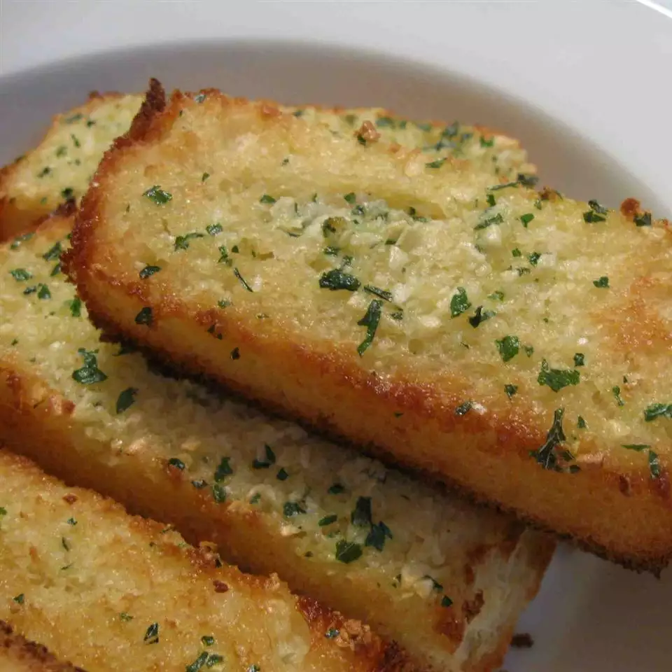

Garlic Bread Recipe!

Description
For all of my life, this savory garlic bread has been a staple in
my mom's evening spaghetti dish. When my friends would come over
for dinner, they would always wonder how she did it! In this recipe
I'm going to finally uncover the secrets to a perfect garlic bread.
Ingredients:
- 2 tbsp butter, softened
- 1 clove garlic, crushed
- 2 tbsp grated Parmesan cheese
- ground black pepper to taste
- 1/4 large baguette, sliced
- 1 tsp chopped fresh parsley
Steps:
- Preheat a grill to high heat.
- Mix together butter, garlic, Parmesan cheese,
and pepper in a bowl.
- Spread the butter mixture generously on the baguette slices.
- Place slices on the preheated grill and cook until butter is
melted and bread is light brown, about 30 seconds.
- Sprinkle with parsley and serve immediately.